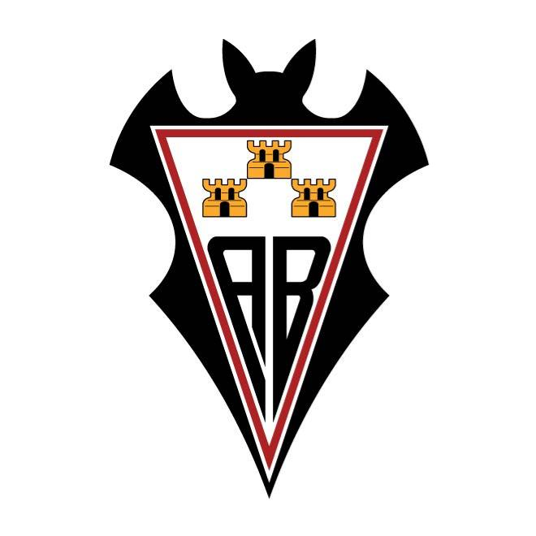
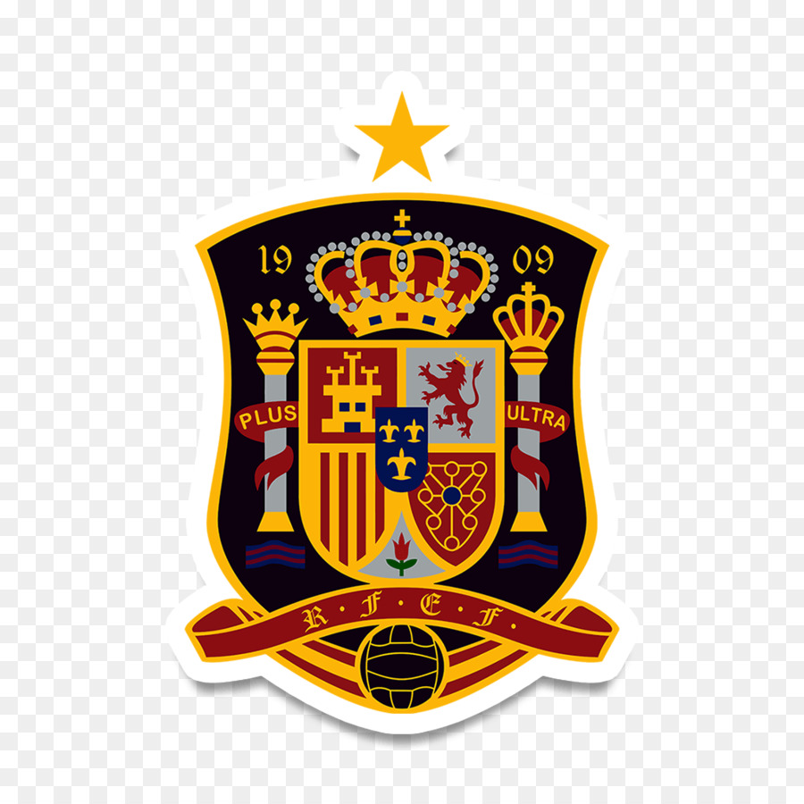

Andres Iniesta

Iniesta playing a match for FC Barcelona

Albacete
- Andres Iniesta was born in a small village called Fuentealbilla, in the province of Albacete, Castile–La Mancha, Spain. It was in this club where Iniesta spent the very early years of his youth career as a footballer. During Iniesta's stay at Albacete, he attracted the attention of scouts from clubs in Spain, and his parents decided to travel to Barcelona to enroll him in the youth ranks.

La Masia (FC Barcelona Youth Academy)
- At age 12, Iniesta joined FC Barcelona's youth academy - "La Masia."
FC Barcelona
- Iniesta played with Barcelona's B team for a short time, but played his first official match with FC Barcelona in October 2002. It was at Barcelona where Iniesta spent the major part of his career as a professional footballer.

Spain National Team
- Andres Iniesta has also been called up to play for the Spanish National Team, and has been one of their more important figures in the past years.
List of Awards / Trophies